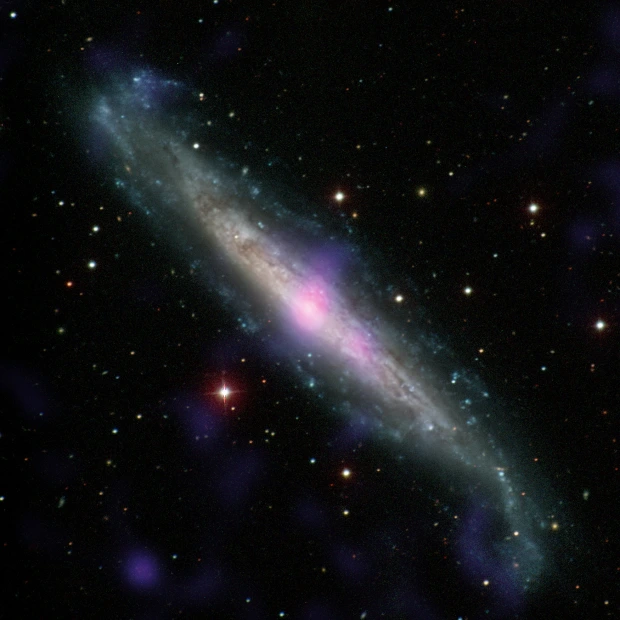

Edhe galaktikat "të vetmuara" mund të presin vrima të zeza supermasive.
Vrimat e zeza supermasive në rritje, të quajtura gjithashtu bërthama aktive galaktike ose AGN, strehojnë disqe të mëdhenj, rrotullues të materialit që shkëlqejnë shkëlqyeshëm në të gjithë spektrin elektromagnetik ndërsa pluhuri dhe gazi kapen nga graviteti dhe spirale nga brenda. Një temë veçanërisht e debatuar shumë është se si materiali derdhet fillimisht nga brenda për të ndezur një AGN - me fjalë të tjera, si ta bëni vrimën e zezë "të uritur" dhe të filloni "të ushqeheni me ushqime ose të përtypni atë çështje përreth", tha Aradhey të martën pasdite në një. konference per shtyp. Astronomët besojnë se janë kryesisht ndërveprimet midis galaktikave fqinje që ndezin urinë në një vrimë të zezë supermasive, pasi forcat gravitacionale e largojnë materialin nga brenda për të siguruar një festë të vërtetë. Por nëse po, çfarë ndodh me vrimat e zeza në galaktikat me pak fqinjë? Për t'iu përgjigjur kësaj pyetjeje, tha Aradhey, ai kërkoi shenja të rritjes së vrimave të zeza supermasive në qendrat e "galaktikave më të vetmuara në vendet e qiellit të quajtura zbrazëtira kozmike".